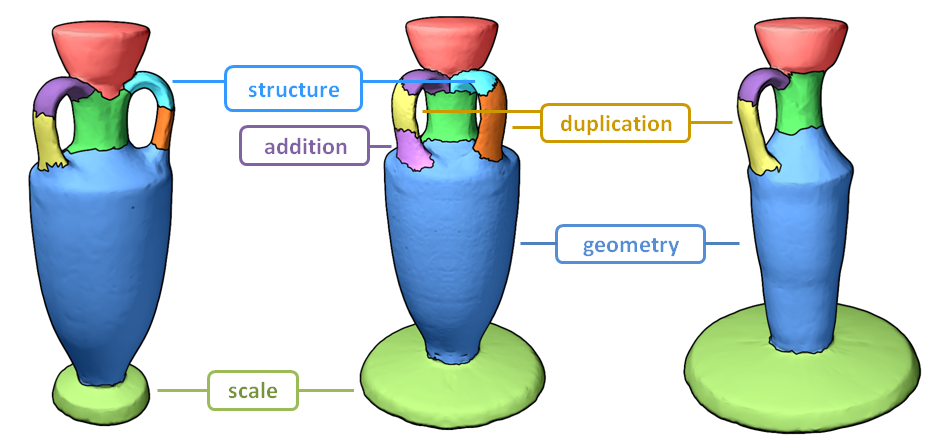

SHED: Shape Edit Distance for Fine-grained Shape Similarity
Yanir Kleiman, Oliver van Kaick, Olga Sorkine-Hornung, Daniel Cohen-Or
SIGGRAPH ASIA 2015

Shape edit distance (SHED) is a similarity measure that estimates the amount of effort needed to transform one shape into the other, in terms of rearranging the parts of one shape to match the parts of the other shape, as well as possibly adding and removing parts.
Abstract
Computing similarities or distances between 3D shapes is a crucial building block for numerous tasks, including shape retrieval, exploration and classification. Current state-of-the-art distance measures mostly consider the overall appearance of the shapes and are less sensitive to fine changes in shape structure or geometry. We present shape edit distance (SHED) that measures the amount of effort needed to transform one shape into the other, in terms of rearranging the parts of one shape to match the parts of the other shape, as well as possibly adding and removing parts. The shape edit distance takes into account both the similarity of the overall shape structure and the similarity of individual parts of the shapes. We show that SHED is favorable to state-of-the-art distance measures in a variety of applications and datasets, and is especially successful in scenarios where detecting fine details of the shapes is important, such as shape retrieval and exploration.
Enriched Datasets
The datasets used in the paper (download here) are based on the COSEG dataset. We enriched some of the datasets to generate more variations within each set. Each collection includes the models in .off format, a segmentation of each shape generated using Approximate Convexity Analysis, and a thumbnail image for each shape.
How to use the code
The code is well documented and self-explanatory. Start by reading the file readme.m, which contains an introduction and runs an example of test data included in the zip file. To run the code on a different data set, create a list of the shapes to compare and run ShedFromList. The code also includes a method to render a nice looking figure that displays the matching between the two shapes, RenderMatchingFigure. If you use this code, please make sure you cite our paper.